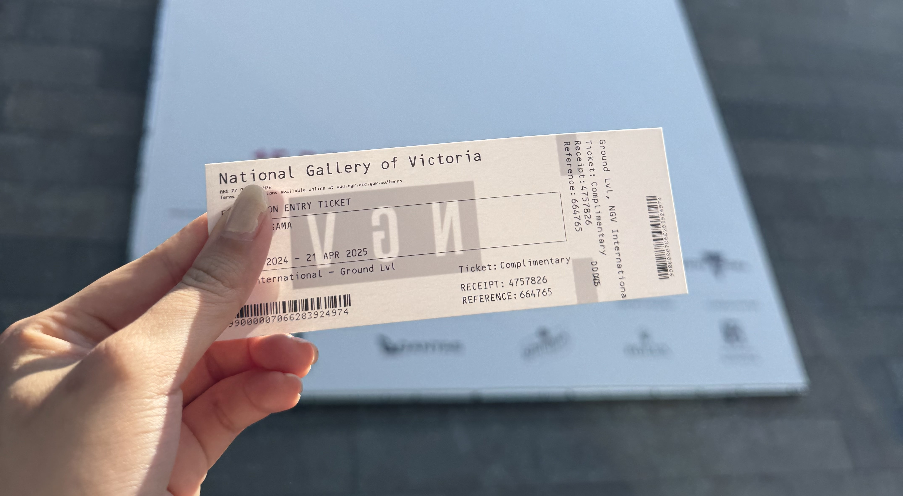
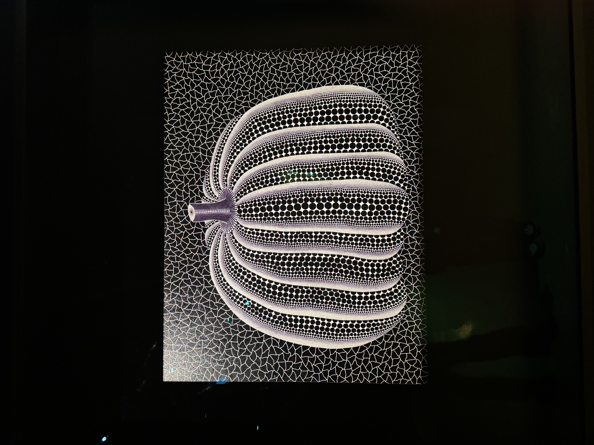
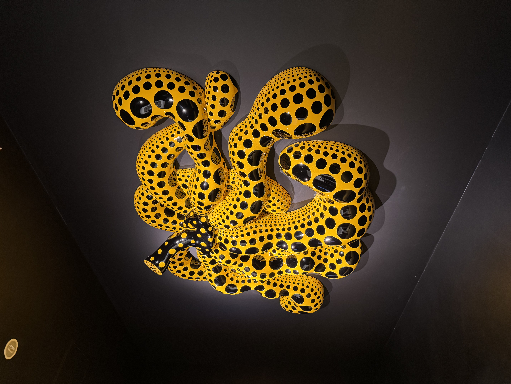
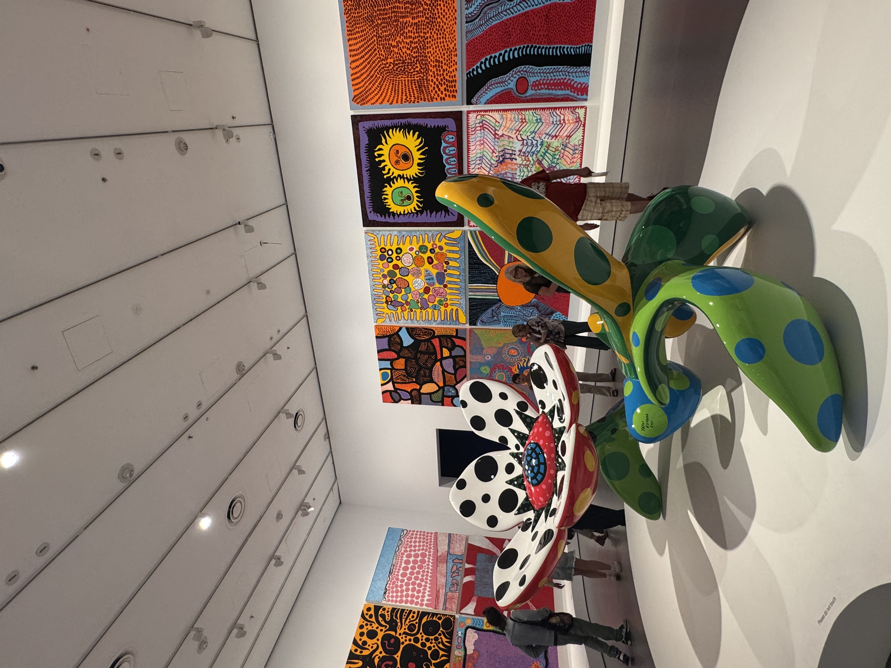
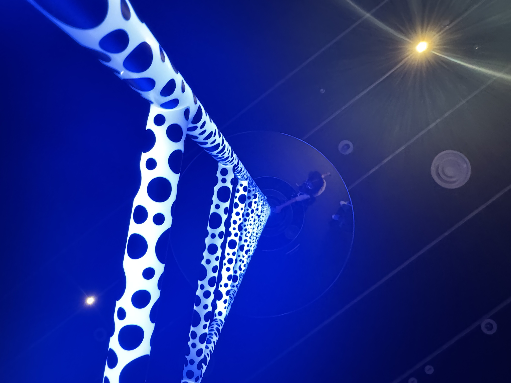
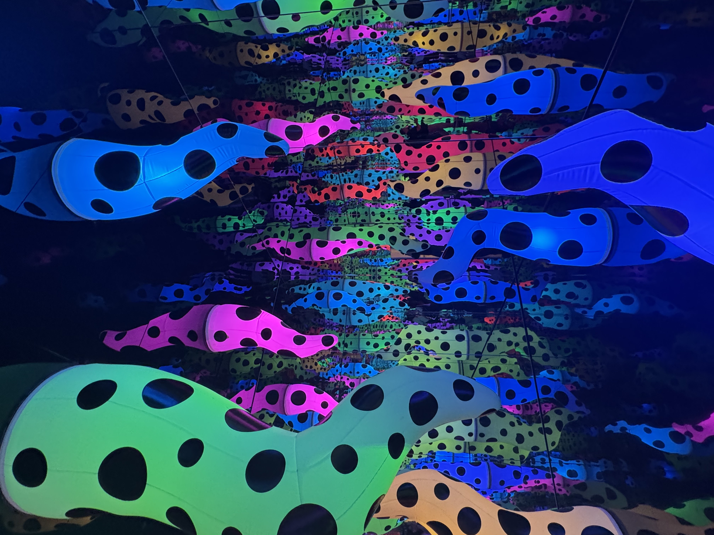
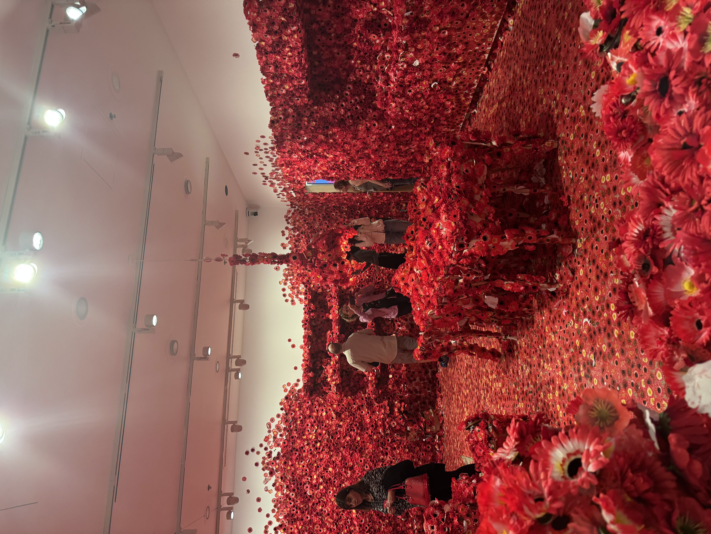
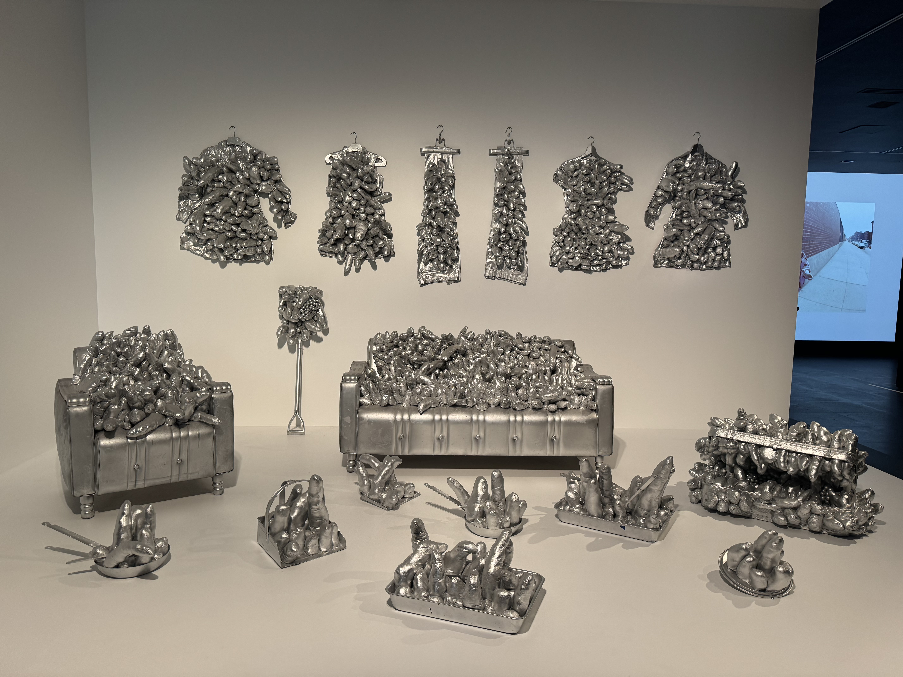
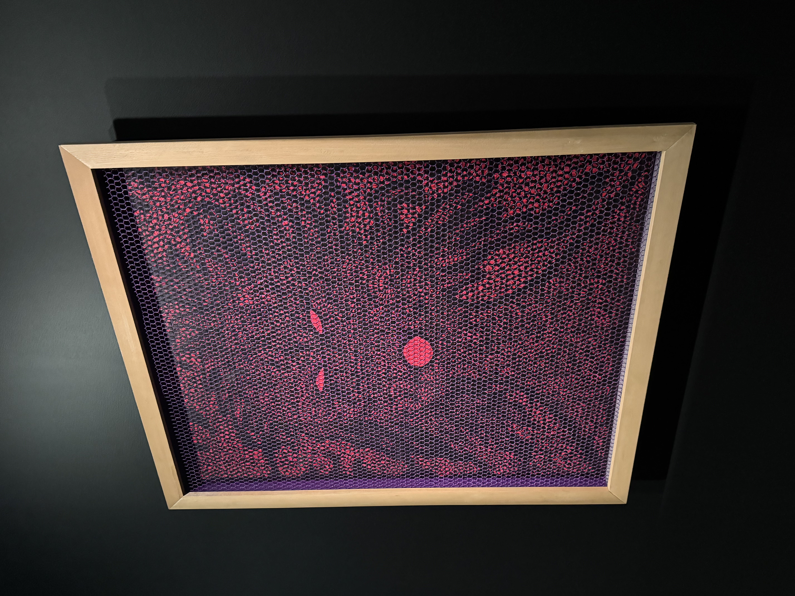

Yayoi Kusama
For class on week 4, we visited the Yayoi Kusama exhibition in the NGV. I wanted to see this exhibition for awhile now so I was really excited we got the opportunity to visit. Having only read about Kusama's digitally, it was truly a highlight to get to experience her artworks in person. What I liked most about the exhibition was seeing her early works such as Air Mail Stickers as I was mostly only familiar with her later more popular works with polka dots and mirrors. I used her installations as inspirations and created them in P5.JS with my own interpretation in a digital form.
Click into the images to view P5 interaction!
More images from gallery
|  |  |  |
|  |  |  |
|  |  |  |